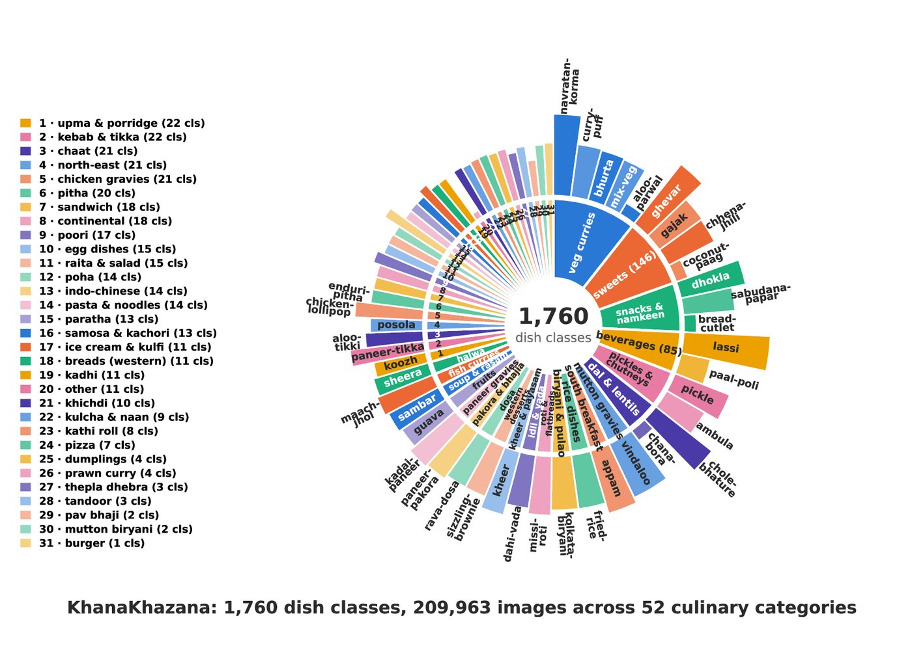
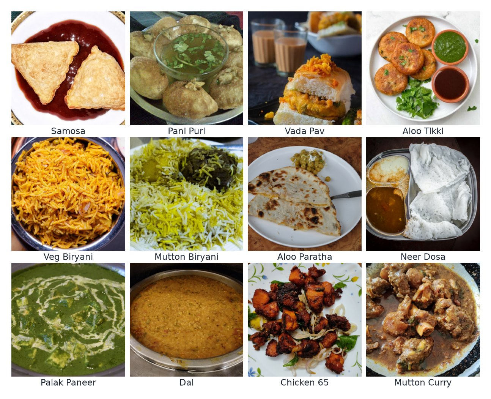
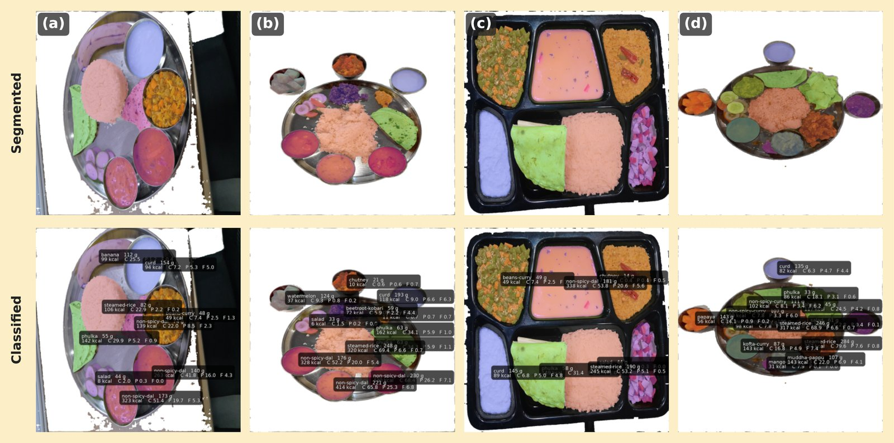

Abstract
Automated food recognition from a photograph enables passive dietary monitoring, with value for chronic-disease management, fitness tracking, drug-trial compliance monitoring and large-scale nutritional epidemiology. The regional diversity of Indian cuisine places distinct dish names in the thousands, creating a fine-grained recognition problem with no equivalent in food-vision benchmarks.
We introduce KhanaKhazana, a dataset of 1,760 dish classes and 210K images, an order of magnitude larger in label space than prior Indian food datasets. Although the corpus spans 1,760 classes, a single restaurant, mess or nutrition study needs only a few hundred concurrently, so we benchmark accordingly: fine-tuned CNNs from 100 to 1,700 classes (300 as the primary scale), frozen DINOv3 and Perception Encoder features, eight zero-shot vision-language models (CLIP through GPT-4o), and a human baseline.
Across nine fine-tuned CNNs spanning a 25× parameter range, data quality dominates both data quantity and backbone capacity. A controlled experiment shows that larger vocabularies lower accuracy and more images per class raise it, independently, and frozen self-supervised and vision-language encoders with a linear head lift the 300-class plateau from 58.9% to 75.7%. The best zero-shot VLM does not close the gap, and a human baseline confirms the task is hard for people, not only for models. Integrated into an existing thali plate-analysis pipeline, the classifier lifts dish identification from 84.51% to 99.50% with unchanged weight-estimation error.
The dataset
KhanaKhazana (Hindi for food treasure) is a near-exhaustive crawl of the Indian dish vocabulary, including regional specialities from states that are poorly covered by pan-Indian datasets, such as eromba (Manipur), galho (Nagaland), kosha mangsho (Bengal) and undhiyu (Gujarat).
About 900K raw web images were cleaned in four stages: OCR-based recovery of blog-filed images (12,540 relocated), exact deduplication (18,053 removed), per-class embedding-based outlier clustering (46,483 images flagged in 1,216 classes) and manual review (198,336 keep, delete, crop or move decisions by three to four annotators). A further 110,873 non-food images were pruned before they entered the corpus.


Why it is hard
- Inter-class similarity. Sambar and dal makhani differ in ingredient and region but not in colour, texture or plating.
- Intra-class variability. Baingan bharta ranges from pale yellow to dark brown across households and regions.
- Deformable structures. A roti is flat when resting and puffed fresh off the tawa.
- Knowledge gaps. Rare regional dishes such as eromba are unfamiliar to most people: 100% of human answers were "I don't know".
- Long tail. Most classes hold far fewer than the several hundred images the head classes enjoy.
Benchmark at 300 classes
The primary benchmark is Popular-300, the 300 most frequently eaten dishes (5,591 test images; the 95% sampling interval on top-1 is about ±1.3 points). The comparison is intentionally asymmetric: fine-tuned and probed models have seen all 300 classes, the zero-shot models none.
| Model | Trainable params | Top-1 | Top-5 |
|---|---|---|---|
| Reference | |||
| Random chance (1/300) | – | 0.33% | 1.67% |
| Human baseline (66 participants, 562 answers) | – | 33.81% | – |
| Zero-shot vision-language models | |||
| CLIP ViT-B/32 | 0 | 0.22% | 2.28% |
| LLaVA-1.5-7B | 0 | 0.00% | 0.00% |
| Qwen2-VL-2B | 0 | 4.66% | 7.69% |
| Llama-3.2-11B-Vision | 0 | 8.97% | 10.78% |
| InternVL2.5-4B | 0 | 16.35% | 22.52% |
| Qwen2-VL-7B | 0 | 19.05% | 26.42% |
| GPT-4o | 0 | 39.95% | 55.68% |
| Gemini 2.5 Flash Lite | 0 | 48.25% | 70.37% |
| Fine-tuned CNNs (selection; nine in the paper) | |||
| DenseNet-121 (our model) | 8M | 58.90% | 84.85% |
| MobileNet-V2 | 3.4M | 58.75% | 84.21% |
| EfficientNet-B3 | 11.5M | 58.04% | 83.24% |
| ResNet-50 | 25M | 57.66% | 83.19% |
| ConvNeXt-Tiny | 27.9M | 51.94% | 78.93% |
| Frozen encoder + linear head | |||
| ViT-S/16 (ImageNet) | 0.1M | 54.01% | 79.45% |
| DINOv3-S/16 | 0.1M | 64.37% | 88.02% |
| PE-Core-B/16 | 0.3M | 68.86% | 91.84% |
| DINOv3-B/16 | 0.2M | 70.93% | 91.95% |
| PE-Core-L/14 | 0.3M | 75.66% | 94.45% |
The frozen-encoder probes are scored on 5,476 of the 5,644 test images. Full tables, including all eleven backbones and three further zero-shot models, are in the paper and supplementary.
Findings
- Fine-tuned backbone capacity is not the constraint. Eight of nine fine-tuned CNNs fall within 4.6 points (54.32–58.90%) across a 25× parameter range; MobileNet-V2 (3.4M) is statistically indistinguishable from DenseNet-121 (8M).
- Stronger pretraining lifts the plateau. Frozen DINOv3 and Perception Encoder features beat every fine-tuned CNN by 5.5 to 16.8 points with at most 0.31M trainable parameters, and they improve with encoder size. The 58% plateau is a property of fine-tuning ImageNet features on fewer than 80 images per class, not a fixed ceiling of the data.
- Cleaning matters more than volume. Adding 2.7× more pseudo-labelled images reduced top-1 by 3 points; pruning 110,873 non-food images recovered it without a single new label.
- Zero-shot VLMs do not close the gap. Frontier closed models reach two to two-and-a-half times the best open-source result, but still trail our fine-tuned model by 10.7 points. CLIP's top-1 is below chance because transliterated dish names are absent from its English captions, and LLaVA-1.5 scores zero because it does not follow the 300-way answer format.
Class count versus images per class
Across the Popular tiers, class count and images per class change together. A controlled experiment trains DenseNet-121 on a fixed number of images per class to separate them: both matter on their own.
| Classes K | 5 img/cls | 10 | 20 | 30 |
|---|---|---|---|---|
| 100 | 40.40 | 50.66 | 56.71 | 61.89 |
| 200 | 29.39 | 37.93 | 49.07 | 51.49 |
| 300 | 24.85 | – | – | – |
| 600 | 19.07 | – | – | – |
Top-1 (%) at a fixed training budget. Doubling the vocabulary from 100 to 200 classes costs 7.6 to 12.7 points at every budget, and more images per class help with diminishing returns (+10.3, +6.0, +5.2 points at 100 classes). Dashes: some classes in the 300- and 600-class tiers have only six training images.
Accuracy as the vocabulary grows
| Tier | Imgs/cls | Top-1 | Top-5 | Schedule |
|---|---|---|---|---|
| Popular-100 | ~183 | 75.45% | 93.73% | baseline |
| Popular-200 | ~139 | 65.42% | 88.94% | baseline |
| Popular-300 | ~125 | 58.90% | 84.85% | baseline |
| Popular-400 | ~118 | 52.88% | 78.96% | baseline |
| Popular-500 | ~111 | 48.45% | 76.33% | baseline |
| Popular-1000 | ~131 | 46.03% | 73.38% | extended |
| Popular-1300 | ~121 | 41.28% | 69.56% | extended |
| Popular-1500 | ~114 | 37.62% | 65.92% | extended |
| Popular-1700 | ~101 | 37.55% | 65.74% | extended |
DenseNet-121, one run per tier, each scored on its own test split. Baseline schedule: 80 epochs, LR 3e-4, label smoothing 0.1. Extended: 120 epochs, LR 1e-4, label smoothing 0.2, used from 1,000 classes up because the baseline underfits there. The full table, including the 600–900 tiers, is in the paper.

Application: thali plate analysis
The classifier drops into the plate-analysis pipeline of Arora et al. (ICVGIP 2025) in place of its prototype-bank KNN. Grounded-SAM-2 segments each dish, our DenseNet-121 identifies it, a regression head estimates the portion weight, and the IFCT-2017 table gives calories, protein, carbohydrate and fat per dish. Dish identification on ITD crops rises from 84.51% to 99.50% (on a 41-class subset of the 50 ITD dishes), with weight-estimation error unchanged at about 14 g MAE.

Data and code
The repository contains the benchmark code (training, evaluation, frozen-encoder probes, controlled experiments and zero-shot VLM scripts), one config per reported experiment, the class list of every evaluated tier, the head / mid / tail frequency groups, per-class accuracy of the 1,700-class model, and the 24 strongest confusion pairs.
Images are not redistributed. Most source images come from restaurant sites and web image search, and their licensing is not settled. The corpus is available to researchers on request: write to harith.yerragolam@research.iiit.ac.in (cc jawahar@iiit.ac.in) with your name, affiliation and intended research use.
Citation
The full reference will be added when the proceedings are published.
@inproceedings{yerragolam2026khanakhazana,
title = {KhanaKhazana: A Large-Scale Indian Food Dataset and
Fine-Grained Classification Benchmark},
author = {Yerragolam, Harith and Jawahar, C. V.},
booktitle = {Proceedings of the Indian Conference on Computer Vision,
Graphics and Image Processing (ICVGIP)},
year = {2026}
}